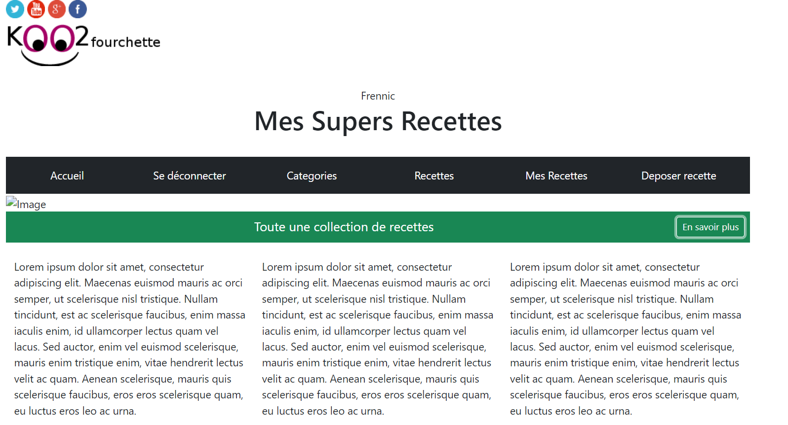
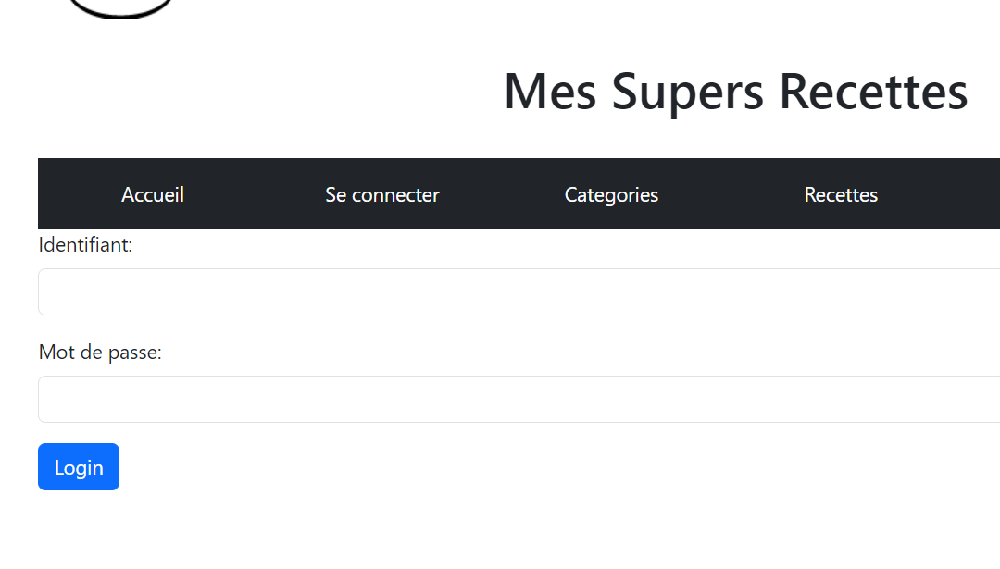
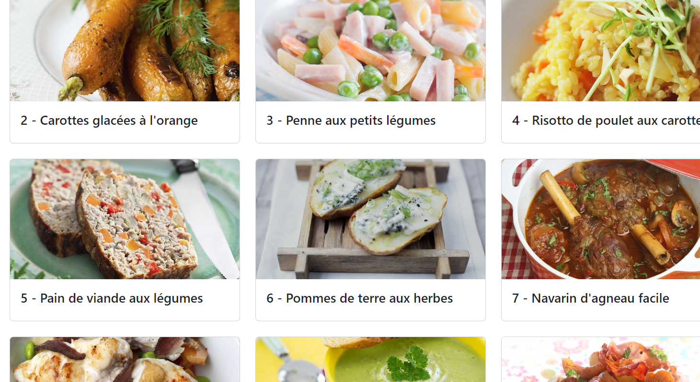
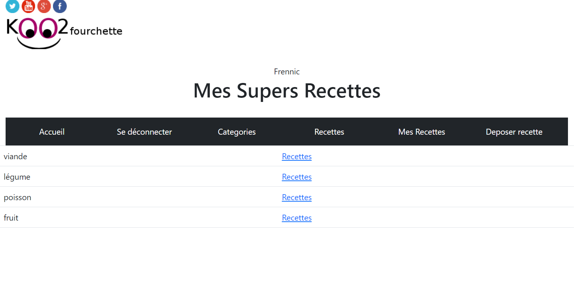

Projet Koo2Fourchette





Description du projet
Site internet de recette de cuisine où il est possible de poster et/ou consulter des recettes, possibilité de créer son compte ainsi que s'y connecter.
Technologies utilisées
HTML5
CSS3
PHP
SQL